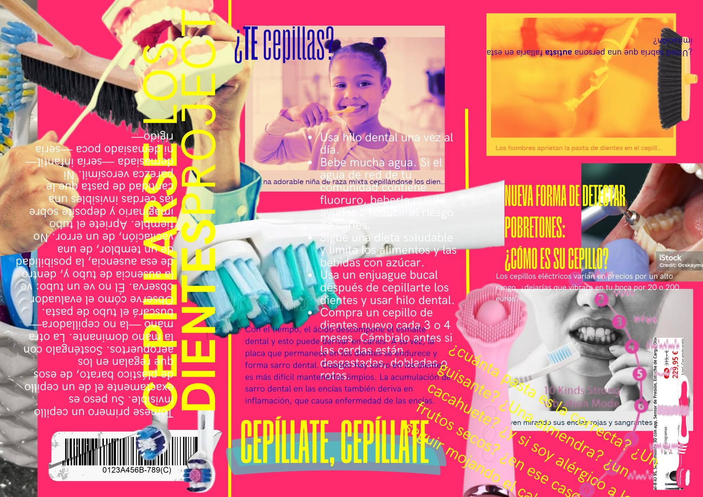

Cepillarse los dientes es una medida higiénica habitual que, por su cotidianidad, no debería de suponer ningún problema al emularse. ¿O sí? ¿Cómo fingiría usted ante otra persona que se está lavando los dientes? ¿Estiraría simplemente el brazo y agarraría su cepillo invisible con totalidad normalidad hasta completar los tres minutos que supone una limpieza óptima? ¡No se habrá olvidado de echarle “pasta”! ¿No? Vamos, cepille trazando pequeños círculos sobre la superficie vestibular de los incisivos. Cuente mentalmente hasta donde decida usted contar (recuerde el tiempo correcto), si ya ha cumplido: lo sentimos, el tío que tiene usted delante ha apuntado algo. ¿Habrá sonreído de más, o de menos, o con los músculos equivocados? ¿Por qué ha sonreído? ¿Le parece una situación ridícula? ¿Es una risilla nerviosa? Se le van a caer a usted los dientes, vaya llamando al ratón.
Emular tareas como cepillarse los dientes o lavarse las manos son pedidas a un adulto dentro del ADOS-2 con el objetivo de observar las habilidades de representación de juego simbólico, ya que lo que se espera de una persona autista es dificultad para crear una realidad alternativa en el momento (el sacarse un cepillo de dientes invisible de la chistera o, para que no suspendamos la prueba, del bolsillo), incomodidad manifiesta con lo absurdo (preguntar el porqué se manda esa tarea o negarse a ello), literalidad (verbalizar como un problema la ausencia de objetos demostrando así un pensamiento lógico dominante) y/o falta de elaboración en la acción (la secuencia de acciones puede ser muy breve o incompleta omitiendo pasos como la simulación de echar la pasta, abrir el grifo o enjuagarse). Asimismo, también puede aparecer dificultad con la imitación motora y la planificación, ya que se espera del cerebro autista que no pueda organizar una secuencia perfecta de movimientos en el espacio debido a las alteraciones en la propiocepción y la praxis ideomotora (sin un objeto real en la mano, es esperable que el gesto en el aire no se oriente en los lugares adecuados espacialmente, o sea, que haga ángulos inesperados o no llegue a situarse la mano frente a la boca o a la altura esperada del grifo).
Esta secuencia de TEAtraviesa se organiza en tres collages construidos con múltiples fotografías “de stock”, ¿no hay acaso una acción más estandarizada que la de la foto de stock? A mí me parece que, de hecho, la foto de stock es el ADOS-2 del mundo visual: estandariza y tipifica, hace un catálogo de signos consumibles y nos sirve para mostrar la norma perceptiva de forma explícita. No obstante, este tipo de fotografías están aquí inscritas en la absurdez (desde la mirada autista), una atmósfera que creo haber logrado conseguir a través de la mezcla saturada (una distribución espacial intencional de los elementos en la composición caótica de estas imágenes “hiper normales” para producir extrañamiento) y enunciados sin sentido o codificados como jocosos que aparecen girados, superpuestos, ilegibles, etc. La idea es mostrar con estos recursos el AIC, por ello se elige el formato de imitación de la estética publicitaria (un flyer o panfleto para Cepillarselosdientesproject y collages que parecen presentaciones de un producto que, de hecho, lo son: el Cleanfisting, un aparato en caja que te limpia los puños a la perfección, ¿estará dentro el cacharro que te lava las manos o es la propia caja la que alberga los secretos con esa estructura de esponjas que parece asomar?).
Lo que quiero es aunar normalidad con secuencialidad errática, son imágenes llenas de elementos útiles y propuestas informativas, pero estos aspectos quedan al final reducidos como incoherentes, contradictorios, excesivos e irreverentes. En Cepillarselosdientesproject hay recortes de diferentes cepillos (contextualizados o no): desde los que se tienen puestos en la tacita del baño, hasta los que se esconden en ese armario largo de la cocina (cabezas de escoba) o en el cajón de las bragas (un vibrador sexual que, cuidado, no se aleja mucho en forma y construcción con un Oral-B). En cuanto a las fotos de stock que contienen personas, estas se recuperan con la descripción que el propio banco de imágenes libre otorga a cada una de ellas… ¿Seguimos en la normalidad? Lean a ver (están manipuladas). En cuanto a los bocadillos de texto, van desde recomendaciones típicas (recopiladas del primer blog que me apareció en el motor de búsqueda al pulsar enter para “cómo cepillarse los dientes”), una práctica descriptiva del lavado de dientes mediante el recurso literario del extrañamiento que recuerda a ese texto de Cortázar sobre cómo subir una escalera y comentarios irreverentes varios con diferentes intencionalidades jocosas. No obstante, no está escondida la pregunta que nos importa, pues puede leerse en la esquina superior derecha: ¿Usted sabría que una persona autista fallaría en esta imitación?